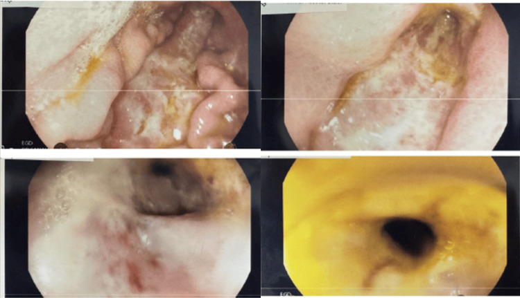
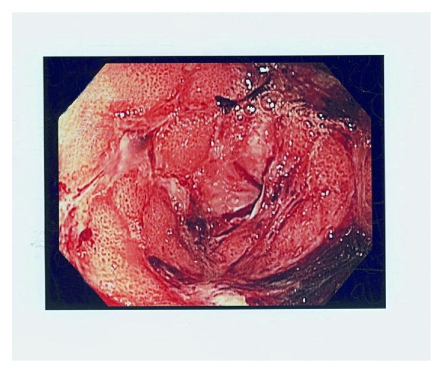
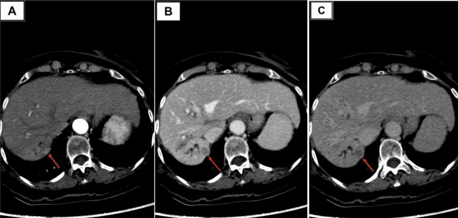
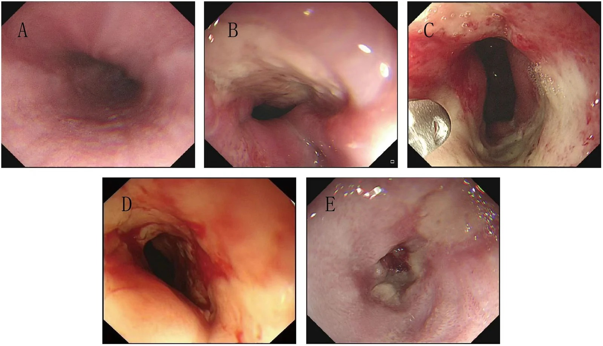
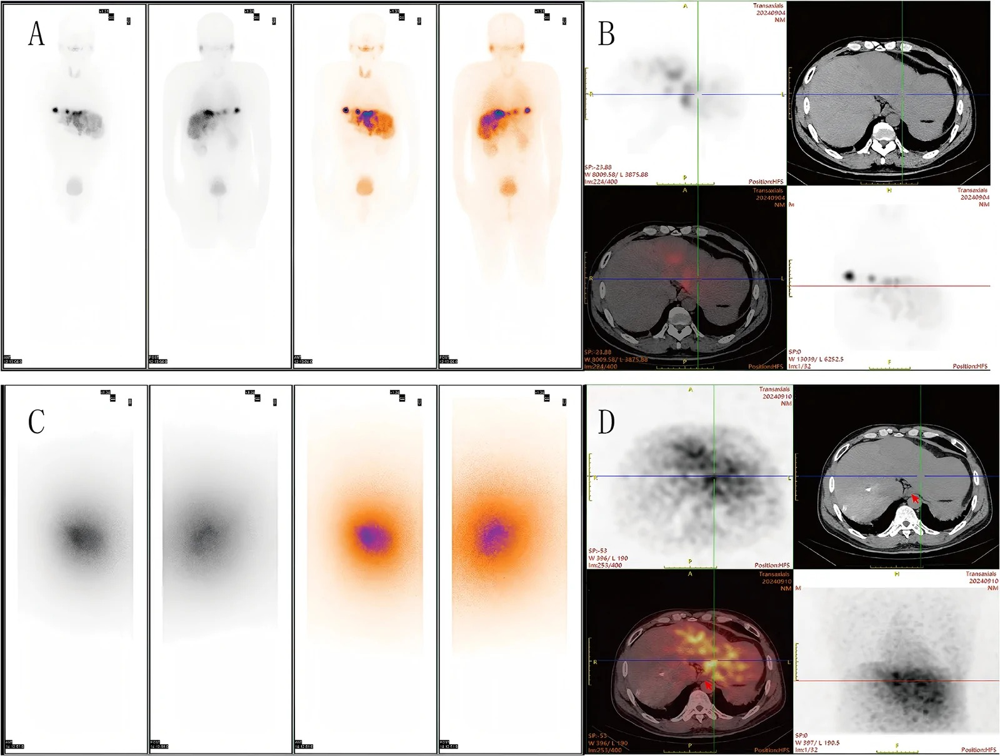
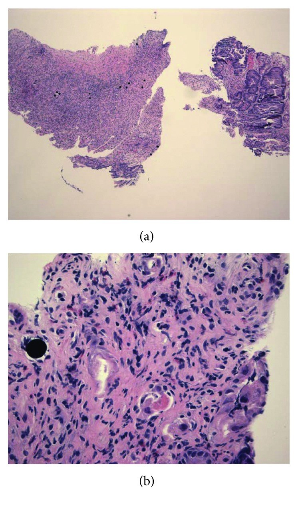

1811 — Loét & HẸP thực quản–dạ dày–tá tràng do trào ngược vi cầu KHÔNG ĐÍCH sau TACE/TARE: đọc vị trí tổn thương để tìm nhánh động mạch tội phạm
Tags: pattern:loet-da-day pattern:thieu-mau-niem-mac pattern:hep-long pattern:xo-hoa-sau-xa vung:thuc-quan vung:da-day vung:ta-trang protocol:DSA-CBCT protocol:noi-soi-tieu-hoa score:CTCAE incidentaloma:khong
Mức chắc chắn (certainty): tổng hợp y văn (literature synthesis) — tổng quan biến chứng can thiệp mạch gan (PMC12328914, PMC12835986) + 3 ca nguyên văn có ảnh nội soi/mô bệnh (PMC12516094, PMC5925165, PMC13658084) + tổng quan điều trị hẹp lành tính kháng trị (PMC13623199, PMC12957609, PMC13183003). Số nào nguồn không nêu thì ghi "chưa rõ", không suy diễn; chỗ hai nguồn lệch nhau thì ghi cả hai.
1. Tổng quan bệnh học – cơ chế hình ảnh
- Có HAI cơ chế khác nhau, và chúng cho hai kiểu loét khác nhau về thời điểm, hình thái và tiên lượng:
- TARE (radioembolization: 90Y hoặc 166Ho) — vi cầu 20–60 µm (nhựa 90Y: 25–45 µm) gây tắc tiểu động mạch, nhưng tổn thương niêm mạc chủ yếu do bức xạ β tại chỗ: tia β của 90Y đi được trung bình 2,5 mm, tối đa 10–11 mm; chu kỳ bán rã 64 giờ, 95% liều phát trong 11 ngày đầu. Dải β ngắn giải thích vì sao tổn thương khu trú đúng nơi vi cầu đậu (thành dạ dày/tá tràng), không lan xa, và vì sao niêm mạc mỏng, giảm tiết acid, phù – viêm mạn rồi loét: các mao mạch nuôi niêm mạc bị chiếu xạ → giảm tái tạo → ổ loét đáy sạch, bờ thiếu máu, chậm lành dù đã ức chế acid.
- TACE (cTACE / DEB-TACE) — tổn thương chủ yếu do thiếu máu: hạt (gelatin, PVA, vi cầu giải phóng thuốc) + thuốc (doxorubicin/epirubicin) làm tắc và gây độc tế bào trực tiếp. Loét kiểu này sớm hơn, đáp ứng với tái tưới máu tốt hơn loét do xạ. Hạt DEB không cản quang → trào ngược không thấy được trên fluoroscopy, chỉ thấy gián tiếp qua vùng thiếu tưới máu trên CBCT/CT sau.
- Vì sao trào ngược lại vào dạ dày–tá tràng: xuất phát từ giải phẫu cấp máu ngoài gan và áp lực bơm. Các nhánh nguy cơ: động mạch vị phải (right gastric), động mạch vị–tá tràng (GDA), động mạch trên tá tràng (supraduodenal), động mạch vị trái / vị trái phụ (left gastric / accessory left gastric), động mạch dây chằng liềm (falciform, cấp máu da quanh rốn). Trào ngược xảy ra khi bơm quá nhanh/quá áp lực, khi tắc dòng (stasis), khi đặt catheter ở thân chung/thân gan riêng thay vì nhánh chọn lọc, hoặc khi có tuần hoàn bàng hệ / biến thể giải phẫu không thấy trên DSA thường.
- Ngưỡng định lượng bắt buộc nhớ:
- TARE: biến chứng tiêu hóa có triệu chứng 1,9–3,2%; biến cố độ ≥ 3 (gồm loét) 1,4% với vi cầu nhựa vs 0,1% với vi cầu thủy tinh; 6% bệnh nhân bị ảnh hưởng cuối cùng phải mổ; triệu chứng sớm 2–3 tuần, loét/hẹp muộn 1–12 tháng; hội chứng sau can thiệp (post-radioembolization syndrome) gặp 20–70% — đây là "bóng ma" che mất chẩn đoán.
- TACE: biến chứng động mạch gộp 1,1–7,2%, phân bố theo thời gian 62% trong 72 giờ đầu, 28% trong 1–4 tuần, 10% sau 1 tháng; yếu tố nguy cơ gồm lipiodol > 20 mL, u ≥ 5 cm, xơ gan Child–Pugh B/C, TACE lặp lại, tiền sử mổ bụng (dính → bàng hệ) và không dùng kỹ thuật siêu chọn lọc (trung tâm dùng siêu chọn lọc có tỷ lệ biến chứng thấp hơn rõ).
- Không có ngưỡng liều hấp thụ thành dạ dày/tá tràng được kiểm chứng để "bảo đảm an toàn": chưa rõ — cần tra. Vì vậy mọi khuyến cáo đều là kỹ thuật (chọn lọc, CBCT, coil, bơm chậm), không phải ngưỡng số.
- Bremsstrahlung SPECT sau bơm không đủ nhạy để trấn an: trong loạt có ca hẹp thực quản muộn, độ nhạy của bremsstrahlung SPECT dự báo loét tiêu hóa chỉ 13% (PMC13658084).
- Tổn thương không chỉ ở dạ dày–tá tràng — mà cả THỰC QUẢN XA: nhánh thực quản của động mạch vị trái nuôi thực quản dưới – tâm vị, nên vi cầu bơm qua nhánh vị trái có đường giải phẫu trực tiếp vào thành thực quản. Ca nguyên văn (PMC13658084): bơm 3 GBq qua nhánh vị trái + 0,5 GBq qua nhánh gan trái → 3 tháng loét thâm nhiễm 1/2 chu vi → 7 tháng loét chu vi tới tâm vị → 12 tháng hẹp có loét → 16 tháng hẹp loét nặng, ống soi không qua được, phải nong bóng. Đây là hẹp xơ do xạ, không phải loét đơn thuần.
- Vì sao hẹp đến MUỘN: nguyên bào sợi cơ tăng sinh + collagen hóa cần nhiều tuần–nhiều tháng mới co lòng ống; vì vậy nội soi 3 tháng chỉ thấy loét KHÔNG loại trừ hẹp về sau.
- Vì sao CT ít giá trị, nội soi là chuẩn: niêm mạc mỏng, ổ loét nông nên CT thường chỉ thấy dày thành khu trú, mất lớp niêm mạc, ít dịch trong lòng, hoặc hơi trong thành khi đã hoại tử/thủng. Chẩn đoán xác định nằm ở nội soi + sinh thiết: vi cầu hiện trên H&E là hạt tròn, đồng kích thước, bắt màu tím/đen, nằm trong mao mạch của mô hoại tử — ca PMC12516094 thấy vi cầu trong cả niêm mạc dạ dày và tá tràng.
2. Mẫu hình + chẩn đoán phân biệt theo vị trí (gamut)
- Mẫu hình A — loét dạ dày "sạch", đơn độc hoặc vài ổ, xuất hiện 1–12 tháng sau TARE, đau dai dẳng: loét do xạ (nontarget radioembolization).
- Mẫu hình B — loét/hoại tử niêm mạc sớm 3 ngày–4 tuần sau TACE hoặc DEB-TACE, có thể kèm chấm thiếu máu lan rộng: loét thiếu máu do trào ngược hạt/thuốc.
- Mẫu hình C — loét rộng gây hẹp lòng (luminal narrowing), ống soi chuẩn không qua được: loét xơ hẹp muộn; ca PMC12516094 phải dùng ống soi nhi để tới tá tràng.
- Mẫu hình D — dày thành + hơi trong thành + dịch tự do: loét thủng/hoại tử — cấp cứu ngoại khoa.
- Mẫu hình E — HẸP XƠ THỰC QUẢN XA (hoặc môn vị) tiến triển qua nhiều tháng, không có khối: khó nuốt/nuốt đau (odynophagia) khởi phát 3 tháng sau TARE, nặng dần; nội soi nhiều lần thấy loét bờ phẳng → vòng xơ đối xứng → ống soi không qua (PMC13658084). Đây là thể hẹp lành tính do xạ, khác loét đơn thuần ở chỗ di chứng xơ hóa là chính.
- Gamut theo VỊ TRÍ (đọc vị trí loét để đoán nhánh tội phạm):
- Bờ cong nhỏ / thân vị → động mạch vị phải (thường xuất phát từ động mạch gan riêng hoặc gan trái) — nhánh hay bị bỏ sót nhất khi lập kế hoạch.
- Hang vị + hành tá tràng / D1–D2 → GDA, supraduodenal, nhánh tá tụy.
- Cardia / bờ cong nhỏ trên → động mạch vị trái / vị trái phụ.
- Nốt tím quanh rốn + hoại tử da, KHÔNG loét dạ dày → động mạch dây chằng liềm (falciform) — cùng cơ chế, khác cơ quan.
- Loét + chảy máu ồ ạt, có "sentinel bleed" → nghĩ giả phình nhánh (GDA/pancreaticoduodenal) do tổn thương mạch, không chỉ loét đơn thuần.
- Gamut theo THỜI GIAN: ≤ 72 giờ → biến chứng chọc/tiêu mỡ/thiếu máu cấp; 1–4 tuần → loét thiếu máu, giả phình, viêm tụy; 1–12 tháng → loét do xạ, hẹp, xơ hóa.
3. Bảng so sánh phân biệt (ma trận đối chiếu)
| Thực thể (entity) | Hình ảnh / nội soi điển hình | Chốt vào (rule-in) | Chốt loại (rule-out) | Gợi ý xác nhận |
|---|---|---|---|---|
| Loét do xạ sau TARE | Loét lớn, đáy sạch/thiếu máu, niêm mạc xung quanh mỏng – phù – viêm mạn; 1–12 tháng sau can thiệp; có thể hẹp lòng | Tiền sử TARE + loét muộn + vị trí khớp nhánh có nguy cơ + vi cầu trong mô bệnh | Loét đơn độc có H. pylori dương, bờ viêm đỏ rõ, đáp ứng PPI 4–8 tuần → nghĩ loét thông thường | Nội soi + sinh thiết bờ loét (tìm vi cầu), đối chiếu bản đồ MAA/bremsstrahlung |
| Loét thiếu máu sau TACE/DEB-TACE | Loét nông/bờ hoại tử, có thể nhiều ổ, xuất hiện 3 ngày–4 tuần; kèm đau nhiều hơn mức hội chứng sau can thiệp | Tiền sử TACE + khởi phát sớm + vùng chiếu tia/catheter tương ứng + hạt thiếu tưới máu trên CBCT | Khởi phát > 3 tháng hoặc loét đơn độc không liên quan vùng can thiệp → không quy kết | Nội soi sớm; CT bụng có cản quang tìm thiếu tưới máu/thủng |
| Loét dạ dày–tá tràng thông thường (H. pylori / NSAID) | Loét tròn, bờ đều, thường < 2 cm, hành tá tràng/bờ cong nhỏ; không liên quan lịch can thiệp | H. pylori (+) / tiền sử NSAID + loét điển hình + lành sau 4–8 tuần PPI | Loét lớn, bờ không đều, kéo dài > 8 tuần dù PPI liều cao → phải loại trừ nguyên nhân can thiệp/ác tính | Test H. pylori, hỏi NSAID, nội soi kiểm tra lành |
| Ung thư dạ dày xâm lấn/loét ác tính | Bờ nổi, đáy hoại tử, dày thành > 1 cm trên CT, hạch, mất lớp niêm mạc | Bờ gồ, dày thành không đều + hạch + sinh thiết ác tính | Niêm mạc quanh loét mỏng – phù đều, không khối, sinh thiết âm tính → không phải ung thư | Sinh thiết nhiều mảnh, CT/EUS |
| Viêm tụy cấp do trào ngược (cùng cơ chế, hay đi kèm) | Tụy phù/to, dịch quanh tụy, amylase/lipase > 3× ULN | Đau lan sau lưng + enzyme tụy > 3× ULN + phù tụy | Enzyme bình thường, đau khu trú thượng vị → không phải | Amylase/lipase, CT bụng |
| Hội chứng sau can thiệp (post-embolization syndrome) | Sốt nhẹ, buồn nôn, đau thượng vị 1–5 ngày, tự hết; 20–70% sau TARE | Đau giảm dần trong 1 tuần + không thiếu máu + không nôn kéo dài | Đau tăng dần > 2 tuần, nôn, sụt cân, thiếu máu → không phải hội chứng đơn thuần, phải nội soi | Theo dõi 1–2 tuần; nội soi nếu kéo dài |
| Hẹp xơ do xạ (thực quản dưới / môn vị) | Vòng xơ đối xứng, nhẵn, không khối; hẹp tiến triển 1–12 tháng (tới 16 tháng), ống soi có thể không qua | Tiền sử TARE + hẹp muộn tiến triển + không khối/hạch + đúng vùng nhánh bơm | Có khối ngoài lòng, hạch, thành dày bất đối xứng → nghĩ u tái phát/xâm lấn | Nội soi + CT/MRI; nong bóng ± triamcinolone chẩn đoán và điều trị |
4. Protocol chụp + phân độ
- Trước can thiệp (phòng ngừa là chính):
- DSA không chọn + chọn để vẽ động mạch vị phải, vị trái, vị trái phụ, GDA và các biến thể; CBCT (cone-beam CT) để nhìn nhánh nhỏ mà DSA 2D bỏ sót.
- Nút coil nhánh có nguy cơ (thường GDA và/hoặc vị phải) trước khi bơm MAA/vi cầu — nhưng nhớ: coil không bảo đảm (xem cạm bẫy 1).
- TARE: bắt buộc 99mTc-MAA planar + SPECT/CT; không chấp nhận hoạt độ ngoài gan ở dạ dày/ruột; nếu không khử được → chống chỉ định, chuyển TACE hoặc điều trị hệ thống.
- Vị trí catheter khi bơm vi cầu phải trùng vị trí lúc bơm MAA; tránh bơm ở thân chung/thân gan riêng (yếu tố nguy cơ độc lập); bơm chậm, đều, dừng trước khi tắc dòng (stasis).
- Sau can thiệp: bremsstrahlung SPECT hoặc PET để phát hiện phân bố ngoài gan; đau thượng vị kéo dài 2–8 tuần sau TARE (hoặc 3 ngày–4 tuần sau TACE) → nội soi dạ dày–tá tràng, sinh thiết bờ ổ loét (không lấy đáy hoại tử) để tìm vi cầu và loại ác tính.
- Phân độ CTCAE v5 (dùng để báo cáo và quyết định mức điều trị): độ 2 = loét có triệu chứng cần can thiệp y khoa (PPI liều cao, dinh dưỡng); độ 3 = nhập viện, nuôi ăn tĩnh mạch/qua ống xa, can thiệp; độ 4 = thủng/đe dọa tính mạng, mổ cấp cứu; độ 5 = tử vong.
- Điều trị: PPI liều cao + sucralfate, tránh NSAID, hoãn hóa trị để loét lành; nuôi ăn qua ống xuống đoạn ruột xa hoặc TPN khi không ăn được; mổ 6% ca bị ảnh hưởng. PPI dự phòng cho mọi ca KHÔNG có chỉ định (không có bằng chứng giảm loét do xạ).
- Không có thử nghiệm ngẫu nhiên so sánh các phác đồ — mọi khuyến nghị điều trị hiện dựa trên ca bệnh và sinh lý bệnh: chưa rõ.
- Điều trị HẸP (khác điều trị loét — cần thang bậc có ngưỡng):
- Định nghĩa hẹp kháng trị (RBES): không đạt đường kính 14–15 mm sau nhiều lần nong (định nghĩa phổ biến nhất trong 18 nghiên cứu) hoặc nong lặp lại không đạt tiêu chí; 30–40% ca hẹp tái phát rơi vào nhóm này (PMC13623199).
- Nong bóng ± tiêm triamcinolone: bậc 1 cho hẹp do xạ; ca hẹp thực quản sau Y-90 giảm hẹp rõ và cải thiện khó nuốt sau nong bóng (PMC13658084).
- Kết quả nội soi điều trị RBES (18 nghiên cứu): kỹ thuật 84,1%, lâm sàng 58,1%; nhóm không miệng nối (gồm hẹp do xạ) kỹ thuật 80,0%, biến chứng 11,3%, lâm sàng 61,1% → thành công kỹ thuật cao nhưng duy trì lâm sàng chỉ ~60% (PMC13623199).
- Hẹp môn vị kháng trị: EUS-guided gastrojejunostomy (EUS-GJ) — thành công kỹ thuật/lâm sàng > 95%, ít tái phát hơn stent (PMC12957609); stent phủ toàn phần chỉ nên tạm thời (nguy cơ di trú).
- Tắc hoàn toàn: nong hai chiều (CARD — combined antegrade and retrograde dilatation), có thể bỏ được phụ thuộc mở dạ dày ra da (PMC13183003).
- Không đạt mục tiêu sau 2–3 lần nong, hoặc tái hẹp nhanh: chuyển stent/cắt xơ nội soi/phẫu thuật — đừng nong vô hạn.
flowchart TD
A[Đau thượng vị / nôn / thiếu máu sau TACE hoặc TARE] --> B{Có tiền sử can thiệp mạch gan?}
B -->|Không| C[Nghĩ loét thông thường, viêm tụy, bệnh khác]
B -->|Có| D{Khởi phát khi nào?}
D -->|Trong 72 giờ| E[Nghĩ hội chứng sau can thiệp, biến chứng chọc, thiếu máu cấp]
D -->|3 ngày - 4 tuần| F[Nghĩ loét thiếu máu - nội soi sớm]
D -->|1 - 12 tháng| G[Nghĩ loét do xạ - nội soi + sinh thiết bờ loét]
F --> H[Nội soi dạ dày - tá tràng + sinh thiết]
G --> H
H --> I{Có vi cầu trong mô bệnh?}
I -->|Có| J[Chốt loét do can thiệp - PPI liều cao + sucralfate + dinh dưỡng]
I -->|Không| K{Loét điển hình + H. pylori hoặc NSAID?}
K -->|Có| L[Điều trị loét thông thường - PPI 4-8 tuần + kiểm tra lành]
K -->|Không| M[Sinh thiết lại - loại trừ ung thư, CMV, thiếu máu khác]
J --> N{Thủng, hẹp, chảy máu không cầm?}
N -->|Có| O[Mổ / can thiệp nội soi - CTCAE độ 3-4]
N -->|Không| P[Theo dõi 4-8 tuần - nội soi kiểm tra]
5. Biến thể bình thường và cạm bẫy
- Cạm bẫy 1 — "đã nút GDA và vị phải là an toàn": ca 57 tuổi (PMC5925165) được nút coil dự phòng cả GDA và động mạch vị phải, MAA cho 7% phổi / 93% gan, bremsstrahlung SPECT không thấy hoạt độ ngoài gan — vẫn loét hang vị lan tỏa 2 tháng sau. Coil chỉ chặn đường đã biết, không chặn bàng hệ và biến thể; và vi cầu có thể đã đi qua trước khi coil.
- Cạm bẫy 2 — hình ảnh phân bố "bình thường" không loại trừ: cùng ca trên, SPECT sau điều trị âm tính vẫn có loét. Độ phân giải và ngưỡng hiển thị của planar/SPECT không đủ nhạy với vài vi cầu đủ gây loét — triệu chứng mới là chỉ định nội soi, không phải hình ảnh.
- Cạm bẫy 3 — hội chứng sau can thiệp che lấp: 20–70% bệnh nhân có đau – buồn nôn – sốt nhẹ sau TARE. Quy tắc an toàn: đau tăng dần hoặc kéo dài > 2 tuần, nôn không giảm, sụt cân, thiếu máu = không còn là hội chứng đơn thuần → nội soi.
- Cạm bẫy 4 — gán ngay cho H. pylori/NSAID ở bệnh nhân ung thư gan: hai nguyên nhân có thể cùng tồn tại; sinh thiết bờ loét + hỏi lịch can thiệp là cách duy nhất phân định. Ngược lại, đừng quy mọi loét cho can thiệp rồi bỏ điều trị H. pylori.
- Cạm bẫy 5 — hạt DEB không cản quang: trên fluoroscopy, trào ngược của DEB không nhìn thấy; chỉ đánh giá được bằng CBCT/CT sau (vùng thiếu tưới máu) và bằng lâm sàng.
- Cạm bẫy 6 — tử vong không phải do loét mà do mất bù xơ gan: ca PMC12516094 chết vì Child–Pugh B → C, nhiễm trùng, DIC, không phải vì chảy máu ổ loét. Ở bệnh nhân xơ gan, nuôi ăn kém + loét = bệnh cảnh toàn thân, cần dinh dưỡng và theo dõi chức năng gan song song.
- Biến thể bình thường: viêm dạ dày/loét nông không triệu chứng, tự lành trong 2–4 tuần, chỉ thấy khi nội soi vì lý do khác — theo dõi, không can thiệp.
- Cạm bẫy 7 — kết luận "chưa hẹp" quá sớm: hẹp xơ tiến triển nhiều tháng sau loét (tới 16 tháng); nội soi ở tháng 3 chỉ thấy loét không loại trừ hẹp về sau. Bệnh nhân khó nuốt mới xuất hiện sau 6–12 tháng là diễn tiến tự nhiên của bệnh, không phải "bệnh mới".
- Cạm bẫy 8 — nhầm hẹp xơ do xạ với u tái phát/xâm lấn: hẹp xơ đối xứng, không khối, không hạch; nhầm sẽ dẫn tới tăng liều hóa trị/xạ vô ích trong khi cần nong bóng.
- Cạm bẫy 9 — sinh thiết âm không loại trừ lạc vị vi cầu: ca PMC13658084 có 4 lần nội soi kèm sinh thiết đều không thấy vi cầu (vi cầu thưa, lấy mẫu ngẫu nhiên); chẩn đoán vẫn dựa vào bối cảnh + vị trí + diễn tiến (và hoạt độ mờ cạnh thành trên bremsstrahlung SPECT).
- Lưu ý trung thực nguồn: ca PMC12516094 ghi 72 tuổi ở phần tóm tắt nhưng 74 tuổi ở phần ca bệnh — bài gốc tự mâu thuẫn, không phải lỗi phiên giải; ghi cả hai khi trích. Ca PMC13658084 cũng không chứng minh tuyệt đối vi cầu trong thành thực quản (sinh thiết âm, SPECT chỉ "mờ, khó phân biệt với hoạt độ gan") — bài gốc tự nêu hạn chế này.
6. Tự lượng giá — Blind Quiz
Ca 1 — Nữ 72 tuổi, xơ gan do viêm gan C (Child–Pugh B), HCC tái phát sau đốt RFA; 3 tháng trước được TARE. Nay đau thượng vị tăng dần, ăn kém. Nhìn ảnh nội soi, mô tả trước.

- Gợi ý lâm sàng: tổn thương HCC 11 mm phân thùy VII, LI-RADS 5; không có tiền sử loét, không dùng NSAID.
- Câu hỏi: Ổ loét ở đâu, hình thái gì? Vì sao u ở phân thùy VII mà lại loét dạ dày? Ba chẩn đoán phân biệt và dấu hiệu nào chốt nguyên nhân?
Bấm để hiện đáp án (findings + chẩn đoán)
- Dấu hiệu (findings): loét dài, rộng từ thành sau trên bờ cong lớn, lan thành vòng quanh ở hang vị, gây hẹp lòng — ống soi chuẩn không qua được, phải dùng ống soi nhi để tới tá tràng; ranh giới niêm mạc dạ dày–tá tràng mất rõ.
- Chẩn đoán (diagnosis): loét hoại tử do xạ sau TARE — sinh thiết dạ dày và tá tràng thấy vi cầu 90Y trong mao mạch, không có tế bào ác tính, kèm mất nhung mao tá tràng. Vị trí u không quyết định vị trí loét: vi cầu đi theo dòng chảy và trào ngược vào nhánh nuôi dạ dày–tá tràng, không theo vị trí khối u.
- Diễn tiến: PPI + sucralfate + kháng acid + dịch truyền thất bại; nuôi ăn tĩnh mạch; nội soi lại vẫn loét nặng; xơ gan mất bù B → C, nhiễm trùng huyết, DIC, tử vong. Bài học: loét do xạ không đáp ứng PPI vì cơ chế là thiếu máu – xơ hóa mao mạc, không phải tăng tiết acid.
- Nguồn ảnh: Cureus 2025 (PMC12516094), Fig. 2, CC BY 4.0 — nguyên bản.
Ca 2 — Nữ 57 tuổi, ung thư vú giai đoạn IV di căn gan–phổi, được SIRT vi cầu nhựa 90Y. Hai tháng sau: buồn nôn, nôn tăng dần. Trước thủ thuật đã nút coil dự phòng GDA và động mạch vị phải.

- Gợi ý lâm sàng: MAA cho 7% phổi / 93% gan; bremsstrahlung SPECT sau điều trị không thấy hoạt độ ngoài gan.
- Câu hỏi: Mô tả tổn thương? Kết quả hình ảnh "âm tính ngoài gan" có loại trừ được loét do can thiệp? Làm gì để chốt?
Bấm để hiện đáp án (findings + chẩn đoán)
- Dấu hiệu (findings): viêm dạ dày lan tỏa + loét hang vị rộng; sinh thiết thấy hạt tròn đen, đồng kích thước trong mao mạch niêm mạc.
- Chẩn đoán (diagnosis): loét dạ dày do vi cầu 90Y lạc chỗ (nontarget radioembolization) — xác định bằng mô bệnh học, không bằng hình ảnh.
- Vì sao "coil đầy đủ" vẫn xảy ra: coil chặn đường đã biết (GDA, vị phải) nhưng không chặn bàng hệ/biến thể, và không loại trừ vi cầu đã đi qua trước khi đặt coil. MAA/bremsstrahlung âm tính không loại trừ vì độ phân giải hạn chế.
- Bước tiếp theo: nội soi + sinh thiết bờ loét, PPI liều cao, sucralfate, nuôi ăn qua ống xa; theo dõi sát vì loét do xạ chậm lành.
- Nguồn ảnh: Case Reports in Immunology 2018 (PMC5925165), Fig. 1, CC BY — nguyên bản.
Ca 3 — Cùng bệnh nhân ca 1: ảnh CT gan 3 thì trước can thiệp. Câu hỏi dành cho người lập kế hoạch, không phải người đọc kết quả.

- Gợi ý lâm sàng: u 11 mm, bắt thuốc động mạch, thải thuốc thì cửa/muộn (LI-RADS 5).
- Câu hỏi: Trên ca này, ba bước nào trong phòng can thiệp có thể giảm nguy cơ loét dạ dày–tá tràng? Nếu bỏ qua bước nào thì hậu quả là gì?
Bấm để hiện đáp án (findings + chẩn đoán)
- Trả lời: (1) DSA không chọn + chọn để vẽ đủ động mạch vị phải, vị trái/phụ, GDA và biến thể, kèm CBCT; (2) coil nhánh nguy cơ trước khi bơm MAA/vi cầu và đặt catheter chọn lọc trùng vị trí bơm MAA — không bơm ở thân chung/thân gan riêng; (3) bơm chậm, dừng trước khi tắc dòng, rồi bremsstrahlung/PET kiểm tra phân bố.
- Hậu quả nếu bỏ: vi cầu trào ngược vào nhánh dạ dày–tá tràng → loét do xạ 1–12 tháng sau, chậm lành, 6% phải mổ, và ở bệnh nhân xơ gan có thể tử vong vì mất bù – nhiễm trùng (đúng ca 1).
- Ghi chú: không có ngưỡng liều nào thay thế được ba bước kỹ thuật trên (chưa rõ ngưỡng thành dạ dày/tá tràng).
- Nguồn ảnh: Cureus 2025 (PMC12516094), Fig. 1, CC BY 4.0 — nguyên bản.
Ca 4 — Nam 47 tuổi, HCC đa ổ, TARE qua nhánh động mạch vị trái; 3 tháng sau khó nuốt, tăng dần trong 1 năm.

- Gợi ý lâm sàng: nuốt đau, không sốt; không có khối trên CT ngực–bụng.
- Câu hỏi: mô tả diễn tiến tổn thương qua các mốc? Vì sao hẹp lại xuất hiện muộn? Hai chẩn đoán phải loại trừ và ngưỡng can thiệp?
Bấm để hiện đáp án (findings + chẩn đoán)
- Dấu hiệu (findings): 3 tháng (B) loét thâm nhiễm 1/2 chu vi; 7 tháng (C) loét chu vi lan tới tâm vị; 12 tháng (D) hẹp có loét; 16 tháng (E) hẹp loét nặng, ống soi không qua được.
- Chẩn đoán (diagnosis): hẹp xơ thực quản dưới do xạ sau TARE — vi cầu qua nhánh thực quản của động mạch vị trái.
- Vì sao muộn: xơ hóa myofibroblast/collagen tiến triển nhiều tháng sau loét; đây là quy luật, không phải "bệnh mới".
- Loại trừ: u xâm lấn/tái phát (không khối/hạch), hẹp do TKI (lenvatinib) — ca gốc dùng đồng thời nên không loại trừ tuyệt đối.
- Xử trí: nong bóng (ca gốc cải thiện khó nuốt); kháng trị khi không đạt 14–15 mm → stent phủ/cắt xơ/EUS-GJ nếu ở môn vị; mổ khi thủng hoặc thất bại.
- Nguồn ảnh: Front Oncol 2026 (PMC13658084), Fig. 1 — CC BY 4.0.

*Bremsstrahlung SPECT/CT sau Y-90: mũi tên đỏ chỉ hoạt độ mờ, khó tách khỏi hoạt độ gan cạnh thành thực quản dưới — minh họa vì sao hình ảnh không đủ để loại trừ lạc vị (độ nhạy dự báo loét chỉ 13%). Nguồn: Front Oncol 2026 (PMC13658084), Fig. 2, CC BY 4.0.*
Hạt vi cầu tròn, đồng kích thước, bắt màu đen trên H&E trong mao mạch niêm mạc — dấu hiệu chốt nguyên nhân khi nội soi thấy loét ở bệnh nhân đã can thiệp mạch gan. Nguồn: Case Reports in Immunology 2018 (PMC5925165), Fig. 2, CC BY.Bài liên quan chéo
- 1807 – Bóc tách ĐMC bụng sau thủ thuật — cùng nhóm biến chứng mạch sau can thiệp
- 180 – Viêm túi mật thiếu máu sau TACE — cùng cơ chế trào ngược vi cầu không đích, khác cơ quan
- 1801 – Bệnh gan do thuyên tắc phóng xạ (REILD) — tổn thương do xạ tại gan
- 1806 – Viêm phổi do xạ sau TARE — cùng nhóm biến chứng TARE do phân bố ngoài gan
- 920 – Nút mạch chảy máu tiêu hóa — xử trí chảy máu khi loét không cầm
- 910 – Áp-xe & dẫn lưu qua da — xử trí ổ nhiễm trùng/thủng sau can thiệp
Không dùng để chẩn đoán độc lập khi chưa có người hướng dẫn.